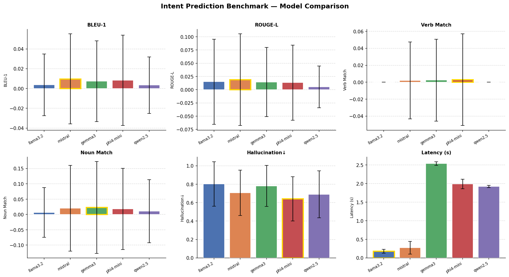
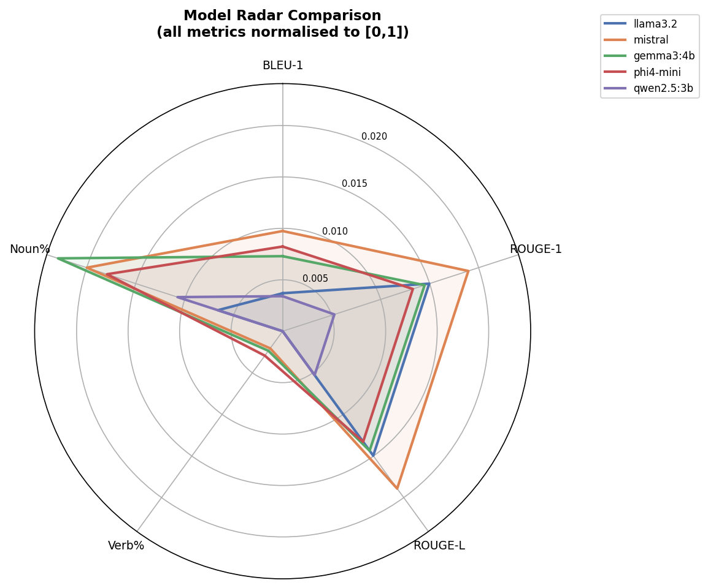
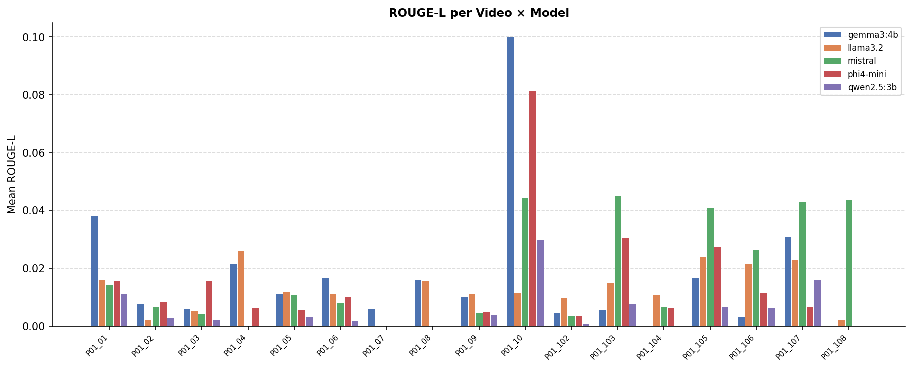
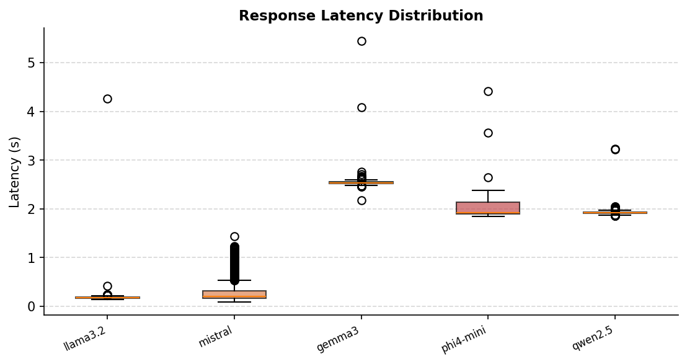

📊 Leaderboard
| Model | BLEU-1 | BLEU-2 | ROUGE-1 | ROUGE-2 | ROUGE-L | Verb % | Noun % | Hall ↓ | Lat (s) | N |
|---|---|---|---|---|---|---|---|---|---|---|
| mistral | 0.0097 | 0.0036 | 0.0190 | 0.0079 | 0.0189 | 0.2% | 2.0% | 0.7064 | 0.275 | 6804 |
| llama3.2 | 0.0037 | 0.0014 | 0.0150 | 0.0021 | 0.0150 | 0.0% | 0.7% | 0.8021 | 0.179 | 6804 |
| gemma3:4b | 0.0073 | 0.0028 | 0.0145 | 0.0005 | 0.0144 | 0.2% | 2.3% | 0.7812 | 2.538 | 6804 |
| phi4-mini | 0.0082 | 0.0031 | 0.0133 | 0.0034 | 0.0133 | 0.3% | 1.8% | 0.6419 | 1.987 | 6804 |
| qwen2.5:3b | 0.0034 | 0.0012 | 0.0053 | 0.0001 | 0.0053 | 0.0% | 1.1% | 0.6902 | 1.921 | 6804 |
best ↑ highest score per column worst ↓ lowest score per column
📈 Charts
Model Overview

Radar Comparison

Per-Video ROUGE-L

Latency Distribution

🔍 Sample Predictions (llama3.2)
| Video | Ground Truth | Prediction | ROUGE-L |
|---|---|---|---|
| P01_01 | open door | Turning. | 0.000 |
| P01_01 | turn on light | Turning. | 0.500 |
| P01_01 | close door | Turning. | 0.000 |
| P01_01 | open fridge | Opening the refrigerator. | 0.400 |
| P01_01 | take celery | Looking at the person. | 0.000 |
| P01_01 | take container | Looking at the person. | 0.000 |
| P01_01 | take tofu | Turning to the person. | 0.000 |
| P01_01 | close fridge | Turning. | 0.000 |
| P01_01 | open fridge | Drinking from the bottle. | 0.000 |
| P01_01 | take carrots and | Opening the refrigerator door. | 0.000 |
📐 Metric Glossary
| BLEU-1 / BLEU-2 | Unigram / bigram precision overlap between prediction and ground-truth narration. |
| ROUGE-1 | Unigram F1 recall of ground-truth tokens in the prediction. |
| ROUGE-L | Longest-Common-Subsequence F1 — rewards in-order word matching. |
| Verb Match % | Fraction of samples where the GT action verb appeared in the prediction. |
| Noun Match % | Fraction of samples where at least one GT object noun appeared in the prediction. |
| Hallucination ↓ | Fraction of content words in the prediction NOT present in YOLO detections (lower = better grounded). |
| Latency | Wall-clock time for the LLM to return a response (Ollama local inference). |